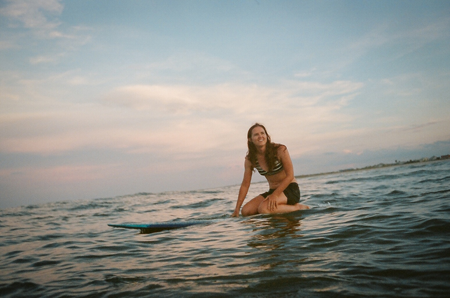

Rachel Bardin is a director and cinematographer known for her use of natural light, bold compositions and explorations of environmental and social issues. Florida raised, Texas trained and Los Angeles based, she found her way into filmmaking through photography, surfing and writing.
How An Elite Sport Plagued by Sex Abuse Turned on Itself | Cinematographer | Bloomberg | 2022
Happiness Is A Journey | Cinematographer | Directed By Ivete Lucas & Patrick Bresnan | The Guardian | 2021
Citizens At Last | Director of Photography | Feature Doc directed by Nancy Schiesari | PBS | March 2021
Part of the Solution | DP + Director | Commercial Documentary | The Atlantic + Almond Board | 2020
Special Jury Prize — IFFBoston. Best Short Documentary at Flyway Film Festival
Austin Film Festival, the American Society of Cinematographers, Marfa Film Festival, the American Conservation Film Festival, PopUP Anthology, the PBS Online Film Festival.
Her fashion sense includes a very embarrasing snowsuit to film in below freezing temperatures, outrageous amounts of zinc and a pair of flippers for filming surfing, and the tragically unhip but back-saving easyrig for doing handheld with cameras that probably weren’t meant for that. From iPhones to Alexas, Rachel enjoys selecting the right tools for the story.
